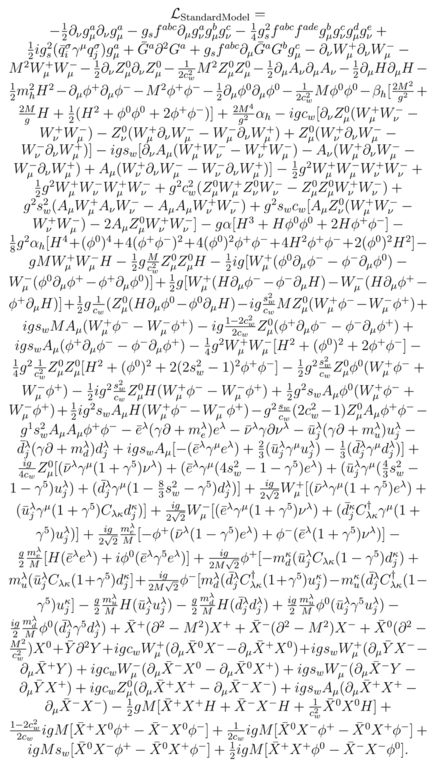

<!----------------------------------------------------------------------------> --- class: middle, center  <!----------------------------------------------------------------------------> --- class: split-50, middle .column[```python a.b(1) ```] .column[``` LOAD_FAST 0 (a) LOAD_ATTR 0 (b) LOAD_CONST 1 (2) CALL_FUNCTION 1 ```] <!----------------------------------------------------------------------------> --- class: split-50, middle .column[```python import a ```].column[```python a = __import__('a') ```] <!----------------------------------------------------------------------------> --- class: middle ```python a.b(1) => getattr(a, 'b').__call__(1) => getattr(a, 'b').__class__.__call__(a, 1) ``` <!----------------------------------------------------------------------------> --- class: middle ```python a + len(b) => a.__add__(len.__call__(b)) => a.__class__.__add__(a, len.__class__.__call__(len, b)) ``` <!----------------------------------------------------------------------------> --- class: split-50, middle .column[```python def r(): pass ```].column[```python r = types.FunctionType(types.CodeType(...), globals(), 'r', args, ..) ```] <!----------------------------------------------------------------------------> --- class: split-50, middle .column[```python @deco class C(A(12)): x = 13 ```].column[```python C = deco(type('C', (A(12),), {'x': 13})) ```] <!----------------------------------------------------------------------------> --- class: middle ```python a.b => A.__getattribute__(a, "b"). A.b.__get__(a) (есть нет A.b.__set__) a.__dict__["b"] A.b.__get__(a) A.__dict__, ... A.__getattr__(a, 'b') # так же вызывается, если одна # из стадий выше выбросила AttributeError ``` <!----------------------------------------------------------------------------> --- class: middle ```python class A: def r(self, v): return v + 1 a = A() a.r # <bound method A.r of <__main__.A object at 0x7f31c29aa978>> A.r.__get__ A.r # 3.x <function __main__.A.r> # 2.x <unbound method A.r> # 2.x ONLY a.r.im_self a.r.im_class a.r.im_func A.__dict__['r'] # 2.x <function __main__.r> # 3.x <function __main__.A.r> ``` <!----------------------------------------------------------------------------> --- class: middle ```python A.r.__get__ # <method-wrapper '__get__' of method object at 0x7f31c3de3a48> A.__dict__['r'].__get__(a) # <bound method ?.r of <__main__.A object at 0x7f9975ded710>> A.__dict__['r'].__get__(a)(1) # 2 a.r(1) => a.__class__.__dict__['r'].__get__(a)(1) ``` <!----------------------------------------------------------------------------> --- class: middle ``` | | время,нс | time/(a.b time) | такты CPU | | ----------------------------------- | -------- | ---------------- | ---------- | | Global var access | 7.4 | 0.2 | 15 | | Empty func call | 66.2 | 2.2 | 132 | | Global var from func | 9.3 | 0.3 | 19 | | Local var from func | 7.4 | 0.3 | 15 | | int + int | 17.5 | 0.6 | 35 | | a.b | 39.2 | 1.0 | 58 | ``` <!----------------------------------------------------------------------------> --- class: split-50, middle .column[```python class A1: def some_func(self, array_2d): res = 0 for arr in array_2d: res += self.other_func(len(arr)) return res ```] --- class: split-50, middle .column[```python class A1: def some_func(self, array_2d): res = 0 for arr in array_2d: res += self.other_func(len(arr)) return res ```] .column[```python class A2: def some_func(self, array_2d): llen = len of = self.other_func res = 0 for arr in array_2d: res += of(llen(arr)) return res ```] --- class: middle ```python class A3: def some_func(self, array_2d): it = map(len, array_2d) return sum(map(self.other_func, it)) ``` --- class: middle * Naive A1: 13 * A2: 8.5 * A3: 10 <!----------------------------------------------------------------------------> --- class: middle ```python A(1, 2) => A.__class__.__call__(A, 1, 2) => type.__call__(A, 1, 2) => def type.__call__(cls, *args, **kwargs): _obj = type.__new__(A, 1, 2) if isinstance(obj, cls): cls.__init__(_obj, 1, 2) return _obj ``` <!----------------------------------------------------------------------------> --- ```python class B(A): d = 12 B = type('B', (A,), {'d': 12}) => type.__class__ is type == True B = type.__call__('B', (A,), {'d': 12}) => B = type.__new__('B', (A,), {'d': 12}) type.__init__(B, 'B', (A,), {'d': 12}) ``` <!----------------------------------------------------------------------------> --- ```python class M(type): def __new__(mcls, name, base, dct): cls = super().__new__(mcls, name, base, dct) print(f"Hello from {mcls.__qualname__}: {cls}") return cls ``` <!----------------------------------------------------------------------------> --- ```python class C(metaclass=M): # for 2.x # __metaclass__ = M # or on module level pass # Hello from M: <class '__main__.C'> C.__class__ # __main__.M type(C) # __main__.M ``` <!----------------------------------------------------------------------------> --- ```python class D(C): pass # Hello from M: <class '__main__.D'> ``` <!----------------------------------------------------------------------------> --- class: middle ```python tp = Sequence[T] ``` <!----------------------------------------------------------------------------> --- class: middle ```python class IndexableMeta(type): def __getitem__(self, idx): return self.getidx(idx) class Sequence(metaclass=IndexableMeta): def getidx(self, idx): return idx t = Sequence[int] ``` <!----------------------------------------------------------------------------> --- class: middle ```python class IndexableMeta(type): def __getitem__(self, idx): return self.getidx(idx) class Sequence(metaclass=IndexableMeta): @classmethod def getidx(cls, idx): return idx t = Sequence[int] t # int ``` <!---------------------------------------------------------------------------->